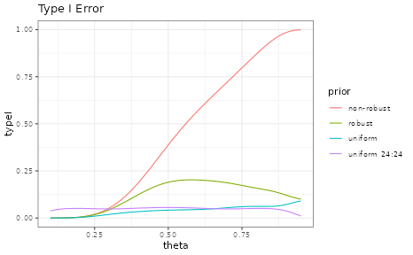
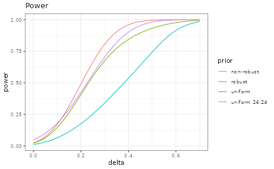
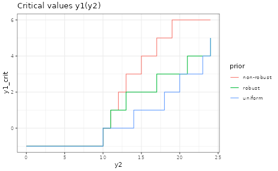

Getting started with RBesT (binary)
Sebastian Weber
2025-01-08
Source:vignettes/introduction.Rmd
introduction.RmdIntroduction
The R Bayesian evidence synthesis Tools (RBesT) facilitate the use of historical information in clinical trials. Once relevant historical information has been identified, RBesT supports the derivation of informative priors via the Meta-Analytic-Predictive (MAP) approach [1] and the evaluation of the trial’s operating characteristics. The MAP approach performs a standard meta-analysis followed by a prediction for the control group parameter of a future study while accounting for the uncertainty in the population mean (the standard result from a meta-analysis) and the between-trial heterogeneity. Therefore, RBesT can also be used as a meta-analysis tool if one simply neglects the prediction part.
This document demonstrates RBesT as it can be used to derive from historical control data a prior for a binary endpoint. The RBesT package homepage contains further articles on introductory material:
- Probability of success with co-data
- Probability of success at an interim with a normal endpoint
- Customizing RBesT plots
- RBesT for a normal endpoint
- Meta-Analytic-Predictive priors for variances
Binary responder analysis example
Let’s consider a Novartis Phase II study in ankylosing spondylitis comparing the Novartis test treatment secukinumab with placebo [2]. The primary efficacy endpoint was percentage of patients with a 20% response according to the Assessment of SpondyloArthritis international Society criteria for improvement (ASAS20) at week 6. For the control group, the following historical data were used to derive the MAP prior:
| study | n | r |
|---|---|---|
| Study 1 | 107 | 23 |
| Study 2 | 44 | 12 |
| Study 3 | 51 | 19 |
| Study 4 | 39 | 9 |
| Study 5 | 139 | 39 |
| Study 6 | 20 | 6 |
| Study 7 | 78 | 9 |
| Study 8 | 35 | 10 |
This dataset is part of RBesT and available after loading the package
in the data frame AS.
RBesT supports all required steps to design a clinical trial with historical information using the MAP approach.
Prior Derivation
Meta-Analytic-Predictive Analysis
The gMAP function performs the
meta-analysis and the prediction, which yields the MAP prior. The
analysis is run using stochastic Markov-Chain-Monte-Carlo with Stan. In
order to make results exactly reproducible, the set.seed
function must be called prior to calling
gMAP .
A key parameter in a meta-analysis is the between-trial heterogeneity
parameter
which controls the amount of borrowing from historical information for
the estimation of the population mean will occur. As we often have only
few historical trials, the prior is important. For binary endpoints with
an expected response rate of 20%-80% we recommend a conservative
HalfNormal(0,1) prior as a default. Please refer to the
help-page of gMAP for more
information.
The gMAP function returns an analysis
object from which we can extract information using the functions from
RBesT. We do recommend to look at the graphical model checks provided by
RBesT as demonstrated below. The most important one is the forest plot,
with solid lines for the MAP model predictions and dashed lines for the
stratified estimates. For a standard forest plot without the shrinkage
estimates please refer to the forest_plot function in
RBesT.
# load R packages
library(RBesT)
library(ggplot2)
theme_set(theme_bw()) # sets up plotting theme
set.seed(34563)
map_mcmc <- gMAP(cbind(r, n - r) ~ 1 | study,
data = AS,
tau.dist = "HalfNormal",
tau.prior = 1,
beta.prior = 2,
family = binomial
)## Assuming default prior location for beta: 0
print(map_mcmc)## Generalized Meta Analytic Predictive Prior Analysis
##
## Call: gMAP(formula = cbind(r, n - r) ~ 1 | study, family = binomial,
## data = AS, tau.dist = "HalfNormal", tau.prior = 1, beta.prior = 2)
##
## Exchangeability tau strata: 1
## Prediction tau stratum : 1
## Maximal Rhat : 1
##
## Between-trial heterogeneity of tau prediction stratum
## mean sd 2.5% 50% 97.5%
## 0.3770 0.2170 0.0414 0.3460 0.8930
##
## MAP Prior MCMC sample
## mean sd 2.5% 50% 97.5%
## 0.2580 0.0842 0.1120 0.2510 0.4590
## a graphical representation of model checks is available
pl <- plot(map_mcmc)
## a number of plots are immediately defined
names(pl)## [1] "densityThetaStar" "densityThetaStarLink" "forest_model"
## forest plot with model estimates
print(pl$forest_model)An often raised concern with a Bayesian analysis is the choice of the
prior. Hence sensitivity analyses may sometimes be necessary. They can
be quickly performed with the update
function. Suppose we want to evaluate a more optimistic scenario (with
less between-trial heterogeneity), expressed by a
HalfNormal(0,1/2) prior on
.
Then we can rerun the original analysis, but with modified arguments of
gMAP:
## Assuming default prior location for beta: 0
print(map_mcmc_sens)## Generalized Meta Analytic Predictive Prior Analysis
##
## Call: gMAP(formula = cbind(r, n - r) ~ 1 | study, family = binomial,
## data = AS, tau.dist = "HalfNormal", tau.prior = 1/2, beta.prior = 2)
##
## Exchangeability tau strata: 1
## Prediction tau stratum : 1
## Maximal Rhat : 1
##
## Between-trial heterogeneity of tau prediction stratum
## mean sd 2.5% 50% 97.5%
## 0.3350 0.1750 0.0416 0.3140 0.7280
##
## MAP Prior MCMC sample
## mean sd 2.5% 50% 97.5%
## 0.2560 0.0786 0.1200 0.2470 0.4390Parametric Approximation
As a next step, the MAP prior, represented numerically using a large
MCMC simulation sample, is converted to a parametric representation with
the automixfit function. This function
fits a parametric mixture representation using expectation-maximization
(EM). The number of mixture components to best describe the MAP is
chosen automatically. Again, the plot function produces a
graphical diagnostic which allows the user to assess whether the
marginal mixture density (shown in black) matches well with the
histogram of the MAP MCMC sample.
map <- automixfit(map_mcmc)
print(map)## EM for Beta Mixture Model
## Log-Likelihood = 4523.865
##
## Univariate beta mixture
## Mixture Components:
## comp1 comp2
## w 0.6167463 0.3832537
## a 19.1916387 3.5278745
## b 57.7779318 9.3735980
plot(map)$mixEffective Sample Size
The (usual) intended use of a (MAP) prior is to reduce the number of
control patients in the trial. The prior can be considered equivalent to
a number of experimental observations, which is called the effective
sample size (ESS) of the prior. It can be calculated in RBesT with the
ess function. It should be noted, however,
that the concept of ESS is somewhat elusive. In particular, the
definition of the ESS is not unique and multiple methods have therefore
been implemented in RBesT. The default method in RBesT is the elir
approach [5] which results in reasonable ESS estimates. The moment
matching approach leads to conservative (small) ESS estimates while the
Morita [3] method tends to estimates liberal (large) ESS estimates when
used with mixtures:
## [1] 37## [1] 26## [1] 63The Morita approach uses the curvature of the prior at the mode and has been found to be sensitive to a large number of mixture components. From experience, a realistic ESS estimate can be obtained with the elir method which is the only method which is predictively consistent, see [5] for details.
Robustification of the MAP Prior
Finally, we recommend to robustify [4]
the prior which protects against type-I error inflation in presence of
prior-data conflict, i.e. if the future trial data strongly deviate from
the historical control information.
## add a 20% non-informative mixture component
map_robust <- robustify(map, weight = 0.2, mean = 1 / 2)
print(map_robust)## Univariate beta mixture
## Mixture Components:
## comp1 comp2 robust
## w 0.493397 0.306603 0.200000
## a 19.191639 3.527875 1.000000
## b 57.777932 9.373598 1.000000## [1] 26Adding a robust mixture component does reduce the ESS of the MAP prior to an extent which depends on the weight of the robust component. Selecting higher robust mixture weights leads to greater discounting of the informative MAP prior and vice versa. As a consequence the robust weight controls the degree of influence of the MAP prior within the final analysis. In some circumstances it can be helpful to graphically illustrate the relationship of the prior ESS as a function of the robust mixture component weight:
ess_weight <- data.frame(weight = seq(0.05, 0.95, by = 0.05), ess = NA)
for (i in seq_along(ess_weight$weight)) {
ess_weight$ess[i] <- ess(robustify(map, ess_weight$weight[i], 0.5))
}
ess_weight <- rbind(
ess_weight,
data.frame(
weight = c(0, 1),
ess = c(ess(map), ess(mixbeta(c(1, 1, 1))))
)
)
ggplot(ess_weight, aes(weight, ess)) +
geom_point() +
geom_line() +
ggtitle("ESS of robust MAP for varying weight of robust component") +
scale_x_continuous(breaks = seq(0, 1, by = 0.1)) +
scale_y_continuous(breaks = seq(0, 40, by = 5))Design Evaluation
Now we have a prior which can be specified in the protocol. The advantage of using historical information is the possible reduction of the placebo patient group. The sample size of the control group is supplemented by the historical information. The reduction in placebo patients can be about as large as the ESS of the MAP prior.
In the following, we compare designs with different sample sizes and priors for the control group. The comparisons are carried out by evaluating standard Frequentist operating characteristics (type-I error, power). The scenarios are not exhaustive, but rather specific ones to demonstrate the use of RBesT for design evaluation.
Operating Characteristics
We consider the 2-arm design of the actual Novartis trial in ankylosing spondylitis [2]. This trial tested 6 patients on placebo as control against 24 patients on an active experimental treatment. Success was declared whenever the condition
was met for the response rates and . A MAP prior was used for the placebo response rate parameter. Here we evaluate a few design options as an example.
The operating characteristics are setup in RBesT in a stepwise manner:
- Definition of priors for each arm.
- Definition of the decision criterion using the
decision2Sfunction. - Specification of design options with the
oc2Sfunction. This includes the overall decision function and per arm the prior and the sample size to use. - The object from step 3 is then used to calculate the operating characteristics.
Note that for a 1-sample situation the respective
decision1S and oc1S function are used
instead.
Type I Error
The type I can be increased compared to the nominal level in case of a conflict between the trial data and the prior. Note, that in this example the MAP prior has a 95% interval of about 0.1 to 0.5.
theta <- seq(0.1, 0.95, by = 0.01)
uniform_prior <- mixbeta(c(1, 1, 1))
treat_prior <- mixbeta(c(1, 0.5, 1)) # prior for treatment used in trial
lancet_prior <- mixbeta(c(1, 11, 32)) # prior for control used in trial
decision <- decision2S(0.95, 0, lower.tail = FALSE)
design_uniform <- oc2S(uniform_prior, uniform_prior, 24, 6, decision)
design_classic <- oc2S(uniform_prior, uniform_prior, 24, 24, decision)
design_nonrobust <- oc2S(treat_prior, map, 24, 6, decision)
design_robust <- oc2S(treat_prior, map_robust, 24, 6, decision)
typeI_uniform <- design_uniform(theta, theta)
typeI_classic <- design_classic(theta, theta)
typeI_nonrobust <- design_nonrobust(theta, theta)
typeI_robust <- design_robust(theta, theta)
ocI <- rbind(
data.frame(theta = theta, typeI = typeI_robust, prior = "robust"),
data.frame(theta = theta, typeI = typeI_nonrobust, prior = "non-robust"),
data.frame(theta = theta, typeI = typeI_uniform, prior = "uniform"),
data.frame(theta = theta, typeI = typeI_classic, prior = "uniform 24:24")
)
ggplot(ocI, aes(theta, typeI, colour = prior)) +
geom_line() +
ggtitle("Type I Error")
Note that observing response rates greater that 50% is highly implausible based on the MAP analysis:
summary(map)## mean sd 2.5% 50.0% 97.5%
## 0.25857963 0.08423297 0.10808237 0.25003652 0.47028444Hence, it is resonable to restrict the response rates for which we evaluate the type I error to a a range of plausible values:
ggplot(ocI, aes(theta, typeI, colour = prior)) +
geom_line() +
ggtitle("Type I Error - response rate restricted to plausible range") +
coord_cartesian(xlim = c(0, 0.5))
Power
The power demonstrates the gain of using an informative prior; i.e. 80% power is reached for smaller values in comparison to a design with non-informative priors for both arms.
delta <- seq(0, 0.7, by = 0.01)
mean_control <- summary(map)["mean"]
theta_active <- mean_control + delta
theta_control <- mean_control + 0 * delta
power_uniform <- design_uniform(theta_active, theta_control)
power_classic <- design_classic(theta_active, theta_control)
power_nonrobust <- design_nonrobust(theta_active, theta_control)
power_robust <- design_robust(theta_active, theta_control)
ocP <- rbind(
data.frame(theta_active, theta_control, delta = delta, power = power_robust, prior = "robust"),
data.frame(theta_active, theta_control, delta = delta, power = power_nonrobust, prior = "non-robust"),
data.frame(theta_active, theta_control, delta = delta, power = power_uniform, prior = "uniform"),
data.frame(theta_active, theta_control, delta = delta, power = power_classic, prior = "uniform 24:24")
)
ggplot(ocP, aes(delta, power, colour = prior)) +
geom_line() +
ggtitle("Power")
We see that with the MAP prior one reaches greater power at smaller differences in the response rate. For example, the for which 80% power is reached can be found with:
find_delta <- function(design, theta_control, target_power) {
uniroot(
function(delta) {
design(theta_control + delta, theta_control) - target_power
},
interval = c(0, 1 - theta_control)
)$root
}
target_effect <- data.frame(
delta = c(
find_delta(design_nonrobust, mean_control, 0.8),
find_delta(design_classic, mean_control, 0.8),
find_delta(design_robust, mean_control, 0.8),
find_delta(design_uniform, mean_control, 0.8)
),
prior = c("non-robust", "uniform 24:24", "robust", "uniform")
)
knitr::kable(target_effect, digits = 3)| delta | prior |
|---|---|
| 0.298 | non-robust |
| 0.341 | uniform 24:24 |
| 0.368 | robust |
| 0.529 | uniform |
Data Scenarios
An alternative approach to visualize the study design to
non-statisticians is by considering data scenarios. These show the
decisions based on potential trial outcomes. The information needed are
the critical values at which the decision criterion flips. In the
2-sample case this means to calculate the decision boundary, see the
decision2S_boundary help for more
information.
## Critical values at which the decision flips are given conditional
## on the outcome of the second read-out; as we like to have this as a
## function of the treatment group outcome, we flip label 1 and 2
decision_flipped <- decision2S(0.95, 0, lower.tail = TRUE)
crit_uniform <- decision2S_boundary(uniform_prior, uniform_prior, 6, 24, decision_flipped)
crit_nonrobust <- decision2S_boundary(map, treat_prior, 6, 24, decision_flipped)
crit_robust <- decision2S_boundary(map_robust, treat_prior, 6, 24, decision_flipped)
treat_y2 <- 0:24
## Note that -1 is returned to indicated that the decision is never 1
ocC <- rbind(
data.frame(y2 = treat_y2, y1_crit = crit_robust(treat_y2), prior = "robust"),
data.frame(y2 = treat_y2, y1_crit = crit_nonrobust(treat_y2), prior = "non-robust"),
data.frame(y2 = treat_y2, y1_crit = crit_uniform(treat_y2), prior = "uniform")
)
ggplot(ocC, aes(y2, y1_crit, colour = prior)) +
geom_step() +
ggtitle("Critical values y1(y2)")
The graph shows that the decision will always be negative if there are less than 10 events in the treatment group. On the other hand, under a non-robust prior and assuming 15 events in the treatment group, three (or less) placebo events would be needed for success. To check this result, we can directly evaluate the decision function:
## [1] 1## [1] 0Trial Analysis
Once the trial has completed and data is collected, the final
analysis can be run with RBesT using the
postmix function. Calculations are
performed analytically as we are in the conjugate mixture setting.
r_placebo <- 1
r_treat <- 14
## first obtain posterior distributions...
post_placebo <- postmix(map_robust, r = r_placebo, n = 6)
post_treat <- postmix(treat_prior, r = r_treat, n = 24)
## ...then calculate probability that the difference is smaller than
## zero
prob_smaller <- pmixdiff(post_treat, post_placebo, 0, lower.tail = FALSE)
prob_smaller## [1] 0.9913233
prob_smaller > 0.95## [1] TRUE
## alternativley we can use the decision object
decision(post_treat, post_placebo)## [1] 1References
[1] Neuenschwander B. et al., Clin Trials. 2010;
7(1):5-18
[2] Baeten D. et al., The Lancet, 2013, (382), 9906, p
1705
[3] Morita S. et al., Biometrics 2008;64(2):595-602
[4] Schmidli H. et al., Biometrics 2014;70(4):1023-1032
[5] Neuenschwander B. et al., Biometrics 2020;76(2):578-587
R Session Info
## R version 4.4.2 (2024-10-31)
## Platform: x86_64-pc-linux-gnu
## Running under: Ubuntu 24.04.1 LTS
##
## Matrix products: default
## BLAS: /usr/lib/x86_64-linux-gnu/openblas-pthread/libblas.so.3
## LAPACK: /usr/lib/x86_64-linux-gnu/openblas-pthread/libopenblasp-r0.3.26.so; LAPACK version 3.12.0
##
## locale:
## [1] LC_CTYPE=C.UTF-8 LC_NUMERIC=C LC_TIME=C.UTF-8
## [4] LC_COLLATE=C.UTF-8 LC_MONETARY=C.UTF-8 LC_MESSAGES=C.UTF-8
## [7] LC_PAPER=C.UTF-8 LC_NAME=C LC_ADDRESS=C
## [10] LC_TELEPHONE=C LC_MEASUREMENT=C.UTF-8 LC_IDENTIFICATION=C
##
## time zone: UTC
## tzcode source: system (glibc)
##
## attached base packages:
## [1] stats graphics grDevices utils datasets methods base
##
## other attached packages:
## [1] ggplot2_3.5.1 knitr_1.49 RBesT_1.8-0
##
## loaded via a namespace (and not attached):
## [1] tensorA_0.36.2.1 sass_0.4.9 generics_0.1.3
## [4] stringi_1.8.4 digest_0.6.37 magrittr_2.0.3
## [7] evaluate_1.0.1 grid_4.4.2 mvtnorm_1.3-2
## [10] fastmap_1.2.0 plyr_1.8.9 jsonlite_1.8.9
## [13] pkgbuild_1.4.5 backports_1.5.0 Formula_1.2-5
## [16] gridExtra_2.3 QuickJSR_1.4.0 scales_1.3.0
## [19] codetools_0.2-20 textshaping_0.4.1 jquerylib_0.1.4
## [22] abind_1.4-8 cli_3.6.3 rlang_1.1.4
## [25] munsell_0.5.1 withr_3.0.2 cachem_1.1.0
## [28] yaml_2.3.10 StanHeaders_2.32.10 parallel_4.4.2
## [31] tools_4.4.2 rstan_2.32.6 inline_0.3.20
## [34] reshape2_1.4.4 rstantools_2.4.0 checkmate_2.3.2
## [37] dplyr_1.1.4 colorspace_2.1-1 assertthat_0.2.1
## [40] posterior_1.6.0 vctrs_0.6.5 R6_2.5.1
## [43] matrixStats_1.4.1 stats4_4.4.2 lifecycle_1.0.4
## [46] stringr_1.5.1 fs_1.6.5 htmlwidgets_1.6.4
## [49] ragg_1.3.3 pkgconfig_2.0.3 desc_1.4.3
## [52] pkgdown_2.1.1 RcppParallel_5.1.9 pillar_1.10.0
## [55] bslib_0.8.0 gtable_0.3.6 loo_2.8.0
## [58] glue_1.8.0 Rcpp_1.0.13-1 systemfonts_1.1.0
## [61] xfun_0.49 tibble_3.2.1 tidyselect_1.2.1
## [64] farver_2.1.2 bayesplot_1.11.1 htmltools_0.5.8.1
## [67] labeling_0.4.3 rmarkdown_2.29 compiler_4.4.2
## [70] distributional_0.5.0